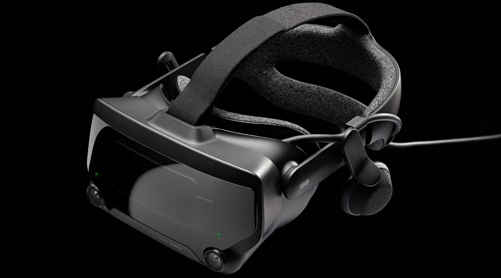

At some random point before I went to bed, I wondered where and how VR became a thing. So this post is the result of that.
Virtual reality has actually been around for a while already. By that, I mean the concept, not the actual technology. It wasn't until around the 1950's that the more modern concept of VR was developed. It began with American filmmaker Morton Leonard Heilig, who used his film experience to develop the Sensorama, an early VR-like system. It was patented in 1962 but eventually died due to the costs of filmmaking. Between 1977 and 1984, artist David Em created navigable virtual worlds at NASA's Jet Propulsion Lab. In 1978, a virtual tour of Aspen, Colorado was created at MIT, allowing users to wander the streets of the city.
Consumer VR headsets weren't commercially widespread until the 1990s. SEGA released their VR headset which contained LCD screens in the visor, stereo headphones, and inertial sensors to track and react to user head movements. The same year, Virtuality became the first mass-produced system that was released globally, even establishing a VR arcade. Over the next decade or so, VR technology continued to develop, with the 2000s being a period of indifference. It wasn't until maybe around the early 2010s that VR gained popularity, gaining even more popularity once quarantine restrictions took effect in 2020.
